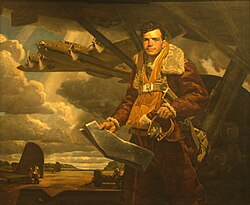

In an airborne battle with Japanese aircraft, Colin Purdie Kelly Jr. (pilot) sacrificed himself and told
his six crew members to evacuate via parachutes. His body was found at the crash site after the bomb.
Kelly’s heroic story swept the news and the song was inspired by him and other great American heroes.
Video
“There’s a Star-Spangled Banner waving somewhere In a distant
land so many miles away. Only Uncle Sam’s great heroes get
to go there, where I wish that I could also live some day.
I’d see Lincoln, Custer, Washington and Perry, and Nathan
Hale and Colin Kelly, too. There’s a Star-Spangled Banner
waving somewhere, waving o’er the land of heroes brave
and true.”
In the lyrics above, matched with a steady temp
and a wistful melody, the song glorifies the way that
many past ‘brave and true’ heroes have died for the
sake of the country, and wishes to die a similar death,
so that he might see them in that ‘distant land’, most
likely alluding to heaven.
The very minimalist instruments and simple harmonizing makes the
message of this song even more striking, as it forced many people
in the time of the war to focus on the depth behind the lyrics, instead
of the instrumentals. We can imagine that American soldiers serving at
the time would have been deeply moved by the way Kelly’s actions were
portrayed in the song, giving them the strength to push on through the
various similar tragedies and hardships that they experienced with their
dying comrades around them.

Image
This is a painting of Kelly, (1942), commemorating his valiant
death. He is portrayed in a very heroic manner, with
the sun shining most brightly on his face, which wears
a proud expression.